Image–caption85.0% · no ImageNet labels (SigLIP 2)
web images with their text: 400M (CLIP) to 10B (WebLI)
ViT + a text transformer
match each image to its caption
very large batches (CLIP: 32,768)
none: write its name
Self-supervised86.5% · linear probe (DINOv2)
images without labels (DINOv2: 142M, curated)
ViT
match two views, or fill in hidden patches
AdamW, a slowly updated teacher
a few
Chapter 1: why we need more, and more varied, data. Chapters 2–4: three ways to get it, each with less human work in the training signal.
ViT-H/14 reads “size / patch”: the Huge Vision Transformer, which cuts the image into 14×14-pixel patches. DINOv2 g/14 and SigLIP 2 g/16: giant, 14- and 16-pixel patches.
Chapter 1 · Data: a model learns whatever separates the labels.
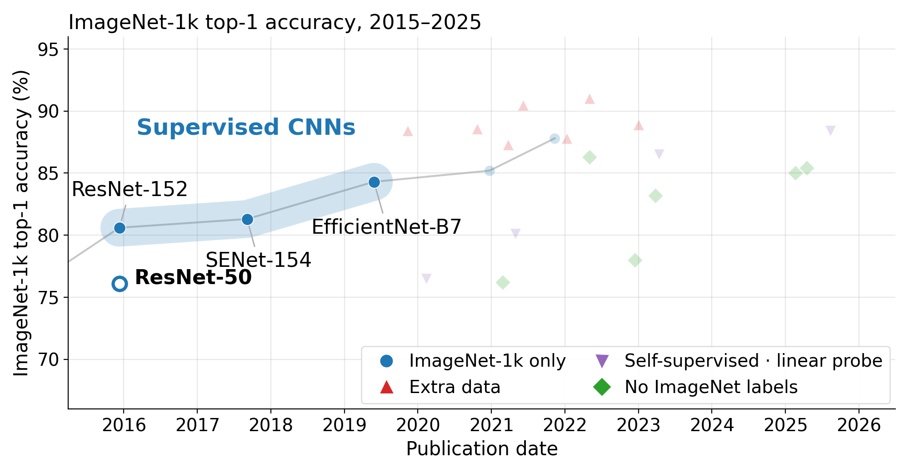
First:why do we need more, and more varied, data?
Ingredient · Data
A model must ignore nuisances yet still separate classes.
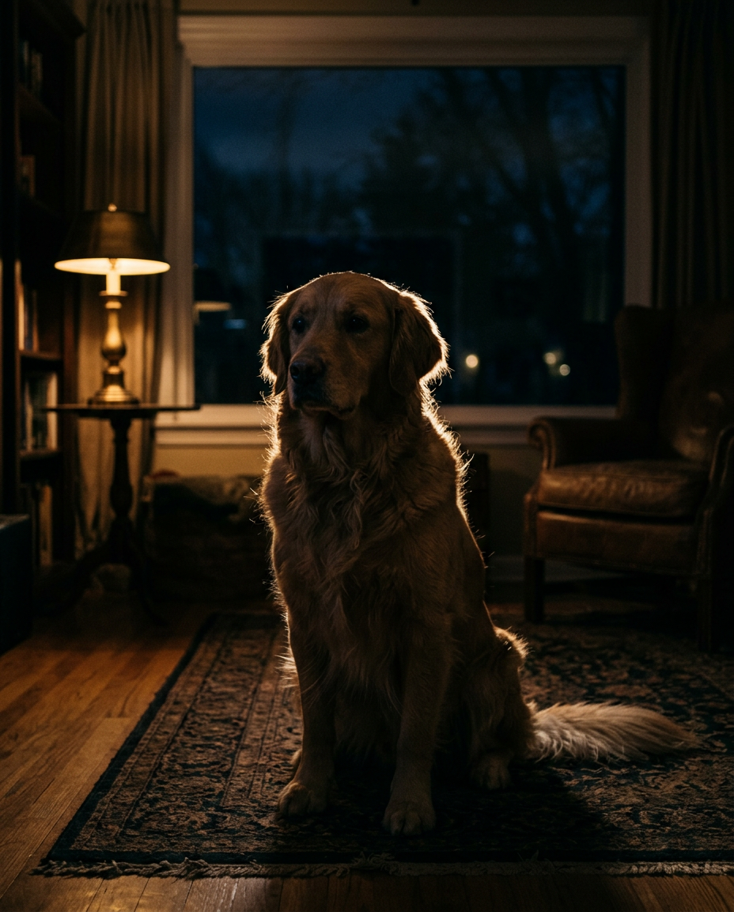
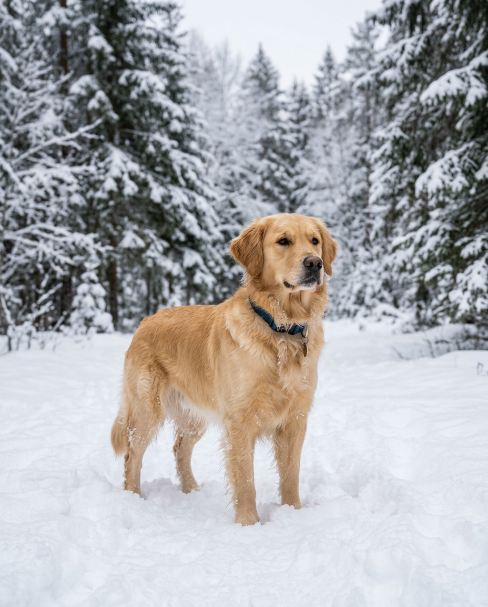
Pose
Light
Background
Occlusion
Same class, four nuisances: invariant to them, sensitive to the class.
The data decides which of these changes the model learns to ignore, and which ones it wrongly relies on.
Ingredient · Data
Test sets that change one thing reveal where models break.
ImageNet-C
Same photos, made worse: noise, blur, weather, digital
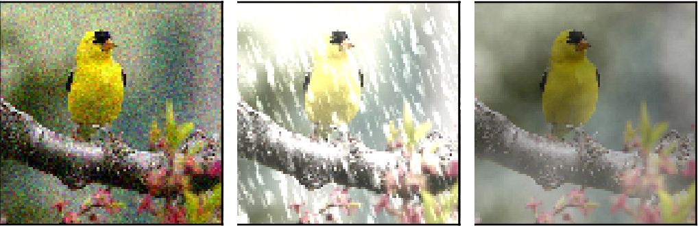
Source: Hendrycks & Dietterich 2019, Fig. 1
75 corruptions: 15 types × 5 strengths
ImageNet-A
Real photos that fooled a ResNet-50 and were kept
True: fox squirrelGuess: sea lion (99%)
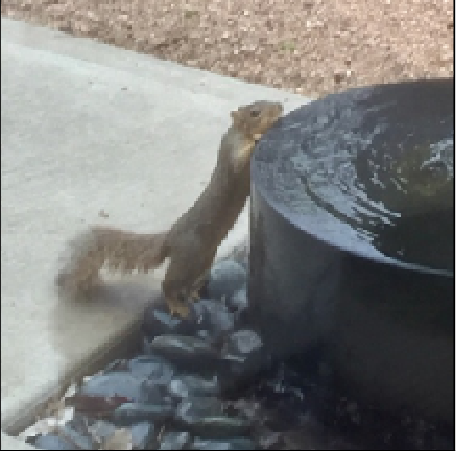
Source: Hendrycks et al. 2019, Fig. 1
ResNet-50: 2.17% accuracy
ImageNet-R
Same classes as paintings, cartoons, sculptures, toys
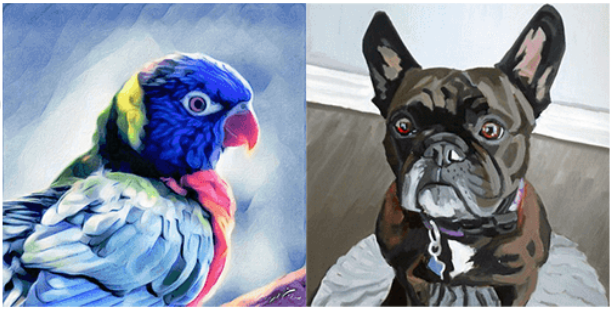
Source: Hendrycks et al. 2020, Fig. 1
ResNet-50 error: 7.9% photos, 63.9% art
Ingredient · Data
Augmentation makes altered copies of images, improving robustness.
One training image, four versions
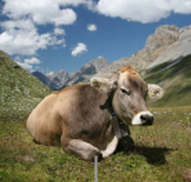
originallabel: “cow”
random croplabel: “cow”
fliplabel: “cow”
colour jitterlabel: “cow”
Every copy keeps the label, so the model learns that framing, direction and colour should not change the answer.
ResNet-50 on ImageNet-C (15 corruptions × 5 strengths)
corruption error, AlexNet = 100 · lower is better
crop + flip
80.6
+ AugMix
68.4
AugMix adds random chains of operations such as rotate, translate and posterize, mixed together. It leaves out noise, blur, contrast and brightness, so the test corruptions are never seen in training. Clean error also drops: 23.9% → 22.4%.
Not the same for every class: adding random crops to a ResNet-50 drops “barn spider” from 68% to 46%, while the average rises.
The limit: it only rearranges what is in the photo. If every training cow stands on grass, every crop and flip still shows grass. Next: what that does to a classifier →
Hendrycks et al. 2020 (AugMix), Table 2 · Balestriero et al. 2022
Ingredient · Objective
A classifier compares features with one prototype per class.
Adam, batch 4,096, warmup then linear decay, weight decay 0.1
a new recipe
ImageNet top-1
76.1%
88.55%
+12.5 points
First, the assumptions a ResNet builds in →
Ingredient · Architecture
A ResNet reuses one small local filter everywhere.
Inductive bias: an assumption built into the model before it sees any data. A convolution assumes that nearby pixels belong together and that a pattern means the same everywhere.
QuestionWhen would these assumptions be wrong?
Ingredient · Architecture
The assumptions fail when distant parts or position matter.
Usually both hold, which is why CNNs learn well from 1.28M images. How fast does the window grow as we stack layers? →
Ingredient · Architecture
Each layer grows a unit's window by (k − 1) × the strides below it.
Kernel k
Stride s
Layers L
Window of one unit
r = 1 + Σl (k − 1)·sl−1
To span a 224-pixel image
Attention connects distant patches in one layer →
Ingredient · Architecture
Attention lets any two patches interact in one step.
How attention works, step by step →
Ingredient · Architecture
Attention mixes the values by how well each query matches each key.
A: weights, each row sums to 1
Z
=
softmax(
Q
Kᵀ
/
√d
)
V
outputs
queries
keys
scale
values
ViT-B/16: N = 196 patches · xi: 768 numbers · qi, ki, vi: d = 64 · A: 196² = 38,416 weights per head and layer
Ingredient · Architecture
Step 1: a dot product scores how well the query matches each key.
sij
=
qi
·
kj
=
|qi|
|kj|
cos θ
score
query of i
key of j
length
length
alignment
patch j
kj
qi·kj
sij
sky
(2, 0)
1·2 + 2·0
2
sun
(2, 1)
1·2 + 2·1
4
trees
(0, 1)
1·0 + 2·1
2
boat
(2, 1.5)
1·2 + 2·1.5
5
i = the water patch. Toy numbers in d = 2, before the ÷√d (it comes after step 3).
Ingredient · Architecture
Step 2: softmax turns scores into weights that sum to 1.
aij = esij / Σm esim
patch j
sij
esij
aij
sky
2
7.4
0.034
sun
4
54.6
0.251
trees
2
7.4
0.034
boat
5
148.4
0.681
sum
217.8
1.000
One point more in score means e ≈ 2.7× more weight: the sun scores 4, the boat 5, and the boat gets 2.7× the sun’s weight.
Ingredient · Architecture
Step 3: the water patch’s output is mostly the boat’s value.
Each vj is 1 × 64, so zi is 1 × 64 too. Every patch does this with its own query, at the same time.
One more detail: why are the scores divided by √d? →
Ingredient · Architecture
Predict: how large is a typical score q·k with 64 random numbers?
Predict
Each number has mean 0 and variance 1. The score adds up 64 products: q1k1 + q2k2 + … + q64k64.
A. about 1
B. about 8
C. about 64
D. about 4,096
“Typical” means the spread of the scores: how far from 0 they usually land.
Ingredient · Architecture + Optimization
Dividing scores by √d stops softmax locking onto one key.
d
scores
Spread of the scores
Largest weight
Answer: B. 64 random products partly cancel: their sum has variance 64, so it spreads by √64 = 8. Dividing by √d brings the spread back to 1 for every d. Why variance d? Proof in backup ›
Ingredient · Architecture
Multi-head attention runs parallel attentions that look for different things.
What each head looks for is learned, not assigned: these two are illustrations.
Ingredient · Architecture
Check your understanding: three questions about attention.
Question
① What does one row of softmax(QKᵀ/√d) hold, and what does it sum to?
② If every key were identical, what would each patch’s output be?
③ Why learn separate WQ and WK instead of scoring xi·xj directly?
A ViT applies this to image patches →
Ingredient · Architecture
A ViT is a transformer on patches with a [CLS] readout.
LayerNorm normalises each token alone and ignores the batch.
LN(x)
=
γ
⊙
(x
−
μ)
/
σ
+
β
learned
one token
mean of its 768
spread of its 768
learned
Same computation at training and test · works with a batch of 1 · newer models also drop μ and β: RMSNorm
Further reading: RMSNorm, x / RMS(x) (Zhang & Sennrich 2019), now standard in LLMs (LLaMA, PaLM) · ViT-22B (Dehghani et al. 2023) uses it at 22B parameters · ViT-5 (Wang et al. 2026) brings it to ViT-B
Ingredient · Architecture + Optimization
Pre-norm puts LayerNorm inside each branch to keep training stable.
x′
=
LN(
x + F(x)
)
norm on the path
x′
=
x
+
F(LN(x))
untouched
norm in the branch
Post-LN needs a careful warm-up; Pre-LN trains without one (Xiong et al. 2020) · right: simulated, ViT-B sizes
Further reading: LayerScale, a learned per-channel scale on each branch (CaiT, Touvron et al. 2021) · QK-Norm for stable attention at scale (ViT-22B, 2023) · ViT-5 (2026): LayerScale and post-norm give the same accuracy
Ingredient · Architecture
GELU is a smooth ReLU that scales each input by Φ(x).
GELU(x)
=
x
·
Φ(x)
input
P(Gaussian < x)
No kink at 0: the slope changes gradually, and small negative inputs still pass a little gradient
Further reading: SwiGLU, a gated MLP (Shazeer 2020), used by LLaMA and by DINOv2 and DINOv3 · ViT-5 (2026) keeps GELU: with LayerScale, SwiGLU ‘over-gates’ in vision
Ingredient · Architecture
The MLP widens each token 4× and holds two thirds of the weights.
The ResNet narrows to make its 3×3 affordable; the ViT has no 3×3, so it can widen
Further reading: MobileNetV2’s inverted bottleneck, the same 4× idea in a ConvNet (Sandler et al. 2018) · SwiGLU MLPs in DINOv2 and DINOv3 · MetaFormer (Yu et al. 2022): with a good block skeleton, even pooling can replace attention
Ingredient · Architecture
A ViT normalises per token, uses GELU and widens its MLP.
Normalisation
per channel → per token
Nonlinearity
kink → smooth
MLP
narrows 4× → widens 4×
The recipe switched to Adam with large batches and warmup.
AdamW shrinks each weight at your chosen rate regardless of gradients.
Adam + L2:
θ ← θ − η
(g + λθ)
/ √v
decay inside
per-weight scale
AdamW:
θ ← θ − η
g / √v
− ηλθ
Adam step
decay outside
Decoupling: Adam’s test error 15% lower (relative) · ViT uses decay 0.1; the √v values are illustrative
Further reading: Adam (Kingma & Ba 2015) · LAMB, per-layer scaling for very large batches (You et al. 2020) · Lion (Chen et al. 2023)
Ingredient · Optimization
Larger batches need a larger learning rate with a slow warmup.
LR
=
base LR
×
batch / 256
linear scaling rule
Why warmup? At step 0 the weights are random: the gradients are large and change direction from one step to the next, and Adam’s √v has seen only a few batches. A full-size step there overshoots and can break training. A few thousand small steps later the gradients are steadier, and the large step is safe.
Further reading: Goyal et al. 2017, the linear scaling rule · cosine decay, SGDR (Loshchilov & Hutter 2017) · RAdam: why Adam itself needs warmup (Liu et al. 2020)
Ingredient · Architecture + Optimization
LayerScale starts each branch near zero so deep ViTs can train.
x′
=
x
+
diag(λ)
·
F(LN(x))
residual
learned, 1 per channel
the branch
Trained on ImageNet-1k only, same recipe at every depth; ✕: training failed before the end (CaiT, Table 1)
Further reading: ReZero and SkipInit: one scalar per branch, starting at 0 · Fixup: rescaled init, no norm · ViT-5 (2026): LayerScale ≈ post-norm in accuracy
Ingredient · Architecture + Optimization
QK-norm bounds the scores so softmax cannot turn one-hot.
s
=
|q|
|k|
cos θ
→
LN(q) · LN(k)
score
length
length
alignment
lengths fixed: only θ matters
One-hot attention passes almost no gradient to the other patches
Further reading: Gilmer et al. 2023, where QK-norm comes from · QK-norm in Gemma 3 and ViT-5 (2026) · logit soft-capping, another way to bound scores
Ingredient · Optimization
The ViT recipe alone lifts a ResNet-50 by 4.3 points.
Purple: a ViT of similar size, trained with the ViT recipe of row 2 · all on ImageNet-1k only, 224 px
Ingredient · Architecture
ConvNeXt copies the ViT block layout using only convolutions.
ConvNeXt: a ResNet-50 modernised step by step with the ViT recipe, 78.8 → 82.0%, no attention · steps: slide 93 ›
Blue: mixes positions (dashed: and channels) · white: mixes channels · 1×1 conv = a linear layer at each position
Ingredient · Architecture + Data
A ViT gains more from data because it assumes less.
Pre-trained on each dataset, then fine-tuned on ImageNet-1k at ≥ 384 px · ResNet-152x4 is 10× larger Recipes: ViT-B 2020, ConvNeXt-B 2022 · sources: ViT paper Tables 2, 5 · BiT Table 2 · ConvNeXt Table 1
Ingredient · Architecture
Image tokens let one transformer read images and text together.
Attention does not care where a token comes from: patches, words or anything else embedded to the same width
Ingredient · Architecture
In cross-attention the words ask and the image patches answer.
Z
=
softmax(
Q
Kᵀ
/
√d
)
V
one row per word
from the text
from the image
from the image
Self-attention: Q, K, V from one sequence, so A is square · caption decoders of CoCa and SigLIP 2 · weights illustrative
Ingredient · Data
There are billions of captioned images but only millions of labelled ones.
Areas to scale.
Labelling by hand at one image per second, day and night:
ImageNet-1k≈ 14 days
WebLI≈ 317 years
Hand-checked labels do not scale.
Chapter 3: use the text that already comes with the images. →
Break
10 minutes
Chapter 3 · Image–caption: existing captions replace hand labels.
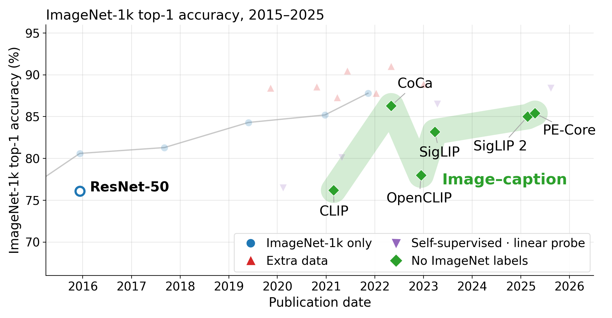
How do we get varied data cheaply?Answer 2: use the captions that already exist
Ingredient · Objective
Predict: how could a model recognise “okapi” with no labelled okapi photo?
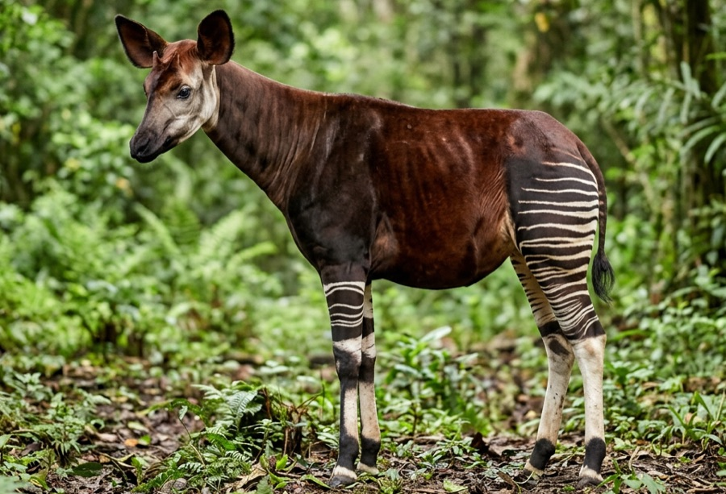
input x
p(y = okapi | x)= softmax(⟨ wokapi , fθ(x) ⟩)
No labelled okapi, so wokapi is missing. Where would you get it?
ACollect and label okapi photos, then fine-tune the whole model.chapter 2: labels at scale
BLabel 10 okapi photos and fit only wokapi, keeping fθ frozen.a few labels
CTurn the words “a photo of an okapi” into a vector and use it as wokapi.no labels at all
Ingredient · Architecture + Objective
CLIP has two towers and compares every photo with every caption.
Both towers end with a linear map to 768 numbers and a normalisation to length 1, so each cell is a cosine
Radford et al. 2021, Fig. 1 and 3, Sec. 2.3–2.4, Table 20 (sizes for ViT-L/14)
Ingredient · Objective + Data
CLIP learns by matching each photo to its own caption.
photo ↓ caption →
“an okapi in the rainforest”
“a cow lying in a mountain meadow”
“a cow walking on a beach”
“an empty grassy hillside”
0.28100%
0.16
0.15
0.12
0.10
0.27100%
0.19
0.14
One label, “cow”, but two captions: to match them, the features must keep meadow vs beach.
0.13
0.19
0.33100%
0.10
0.05
0.1617%
0.10
0.1883%
cell: cosine of photo and caption · %: softmax over the row after × 100 (shown if ≥ 1%) · blue: the photo’s pick
In CLIP: 400M web pairs, no labels · 32,768 per batch · each caption also picks its image (columns)
Scores: CLIP ViT-L/14 on these four photos (computed) · Radford et al. 2021, Sec. 2.2, 2.3 and 2.5
Ingredient · Objective
Each CLIP row is a classifier whose prototypes are caption vectors.
chapter 1 classifier
p(y = c | x)
= softmaxc(
⟨ wc
, fθ(x) ⟩
)
↕ same place
CLIP, one row
p(tj | xi)
= softmaxj(
100 ·
⟨ g(tj)
, fθ(xi) ⟩
)
over the captions
learned scale
text encoder
image encoder
chapter 1 classifier
fθ(x) ·
wcow
wdog
wseashore
… 1,000 labels
learned vectors, one per label · the same at every step · 732 to 1,300 photos per class
CLIP, one row
fθ(x) ·
g(“an okapi in the rainforest”)
g(“a cow lying in a mountain meadow”)
g(“a cow walking on a beach”)
… 32,768 captions
text vectors of the batch’s captions · new at every step · 1 photo per caption
If any caption can be a class, a class name can be a caption: that is zero-shot →
Radford et al. 2021, Sec. 3.1.2 · ILSVRC: Russakovsky et al. 2015, Table 2
Ingredient · Objective
Zero-shot turns each class name into a caption and needs no labelled photos.
wclass
=
g(“a photo of a {class}.”)
one prototype per class
the text encoder reads the class name
all six names listed
“okapi” left out
okapi
99.9%
not listed
zebra
<0.1%
79%
giraffe
<0.1%
11%
cow
<0.1%
7%
deer
<0.1%
2%
horse
<0.1%
1%
CLIP picks only among the names you list: drop “okapi” and it answers “zebra”.
Zero-shot ≠ never seen: okapis appear in CLIP’s web captions; no labelled okapi photo was used.
Photo: AI-generated · scores: CLIP ViT-L/14, “a photo of a {class}.” (computed) · Radford et al. 2021, Sec. 3.1.2
Ingredient · Objective
Zero-shot is worth about 5 labelled photos per class but varies widely.
BFew-shot · label k photos per class and fit only wc on CLIP’s frozen features
Why zero-shot beats training on one photoFit wokapi on one labelled photo and it cannot tell what makes it an okapi: the animal, the stripes or the forest, like the cow and the grass in chapter 1. The caption “a photo of an okapi” names the animal.
Where zero-shot is weakOn specialised tasks, such as satellite tiles and flower species, one labelled photo per class already beats it.
Radford et al. 2021, Fig. 7 and Sec. 3.1.5 · logistic regression on CLIP’s features, interpolated from 1, 2, 4, 8 and 16-shot results
Ingredient · Data + Objective
CLIP’s lessons outlived its private data, softmax and English-only text.
1
Learn from text, not labelsAny class you can name becomes a class; CLIP-style image encoders now feed multimodal LLMs.MetaCLIP 2, Sec. 1
2
Match, don’t generateMatching learned 4× faster than predicting the caption’s words, about 12× faster than writing it.CLIP, Fig. 2 · captioning came back only as an extra loss (CoCa, SigLIP 2)
3
The data is the main ingredientCLIP balanced its 400M pairs over 500,000 search terms, at most 20,000 pairs each.CLIP, Sec. 2.2 · the next slides
4
Zero-shot is more robustOn natural distribution shifts, zero-shot CLIP closes up to 75% of the gap left by ImageNet training.CLIP, Sec. 3.3 · fine-tuning gives part of it back (chapter 4)
Replaced since:private → open data · OpenCLIPsoftmax → sigmoid · SigLIPEnglish → worldwide · MetaCLIP 2
Ingredient · Data
OpenCLIP on open data matches ImageNet accuracy and beats CLIP at retrieval.
Same model and loss; what changed
· data: LAION-2B, open, filtered with OpenAI’s own CLIP
· batch 86K instead of 32K
· bfloat16: with float16, large models diverged
· cost: 122,509 A100-hours for ViT-L/14
With more compute the gap grows: CLIP’s data improves ImageNet faster, LAION improves retrieval faster.
Cherti et al. 2023, Table 1, Sec. 3.2 and 4, Table 18 · ViT-L/14, zero-shot
Ingredient · Data
Filtering helps until about 450M images and then unfiltered data wins.
One web pool of 128M image–caption pairs, same model, same budget.
At 640M images seen, the filtered set has been repeated 50 times, the full pool 5 times. Each repeat taught the model less.
Choose the filter by how many times your budget repeats the data.
Curves schematic; crossing at 450M from Goyal et al. 2024, Fig. 2; filter levels from Fig. 3.
Ingredient · Objective
SigLIP scores each image–text pair as an independent yes/no.
L = −(1/B) Σi Σj log σ( zij · (t⟨xi, yj⟩ + b) )
zij = +1 if i = j, else −1 · t, b learnable
softmax = pick one of C classes · sigmoid = independent yes/no per class (multi-label)
How we measure
Zero-shot ImageNet accuracy has plateaued at 85–86%.
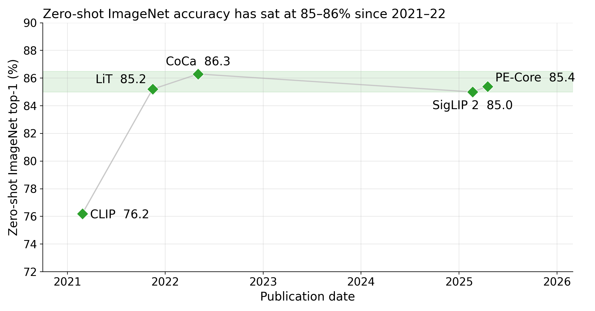
Dense features = one vector per image patch, not per image. Perishable: refresh before the lecture.
Chapter 4: drop the text too. Self-supervised ViTs now match CLIP on the same images (Web-SSL) →
Chapter 4 · Self-supervised: drop the text too.
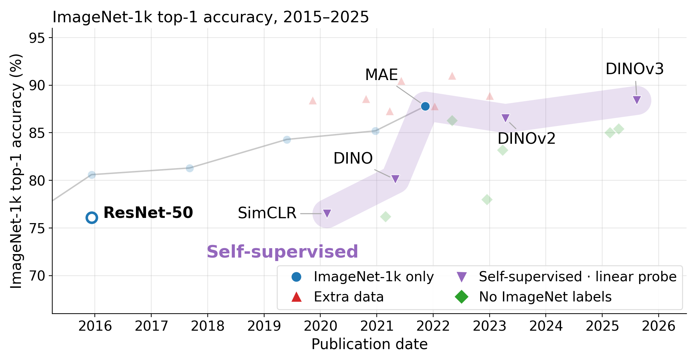
How do we get varied data cheaply?Answer 3: no labels or text for training, a few labels at the end
Ingredient · Objective
A few labels are enough when unlabelled features cluster.
Go unsupervised
Unlabelled images are cheap. Learn fθ from them alone: no labels, no wc.
① kNN: no training. A new image takes the label of its nearest labelled neighbours.
② Linear probe: keep the features frozen and fit new prototypes from a few labels.
If the points still cluster, labels are only needed at the end.
Ingredient · Objective
Self-supervision predicts one view of an image from another.
Ingredient · Objective
Think-pair-share: how do you stop a constant output?
Think-pair-share
A constant output satisfies every invariance loss. How would you stop it?
Ingredient · Objective
Matching views discards detail but masking keeps it.
Match two views
discards
NegativesSimCLR
76.5%
AsymmetryBYOL
74.3%
Self-distillationDINO → DINOv2/v3
78.3% kNN
StatisticsBarlow Twins, VICReg
Predict what is hidden
keeps
MAEmask 75%, reconstruct pixels
87.8%
I-JEPApredict representations
Ingredient · Optimization
A pretrained backbone is used in three ways.
Linear probe
Train only the linear head.
Nearest neighbours
kNN: vote of the k closest labelled images.
Fine-tune
Train everything.
p(y=c | x) = softmaxc(⟨wc, fθ(x)⟩)
Ingredient · Optimization
Predict: does full fine-tuning help or hurt on shifted data?
Predict
Compared with just training a linear classifier on frozen features, does full fine-tuning help or hurt accuracy on shifted images?
A. Helps on both
B. No change
C. Hurts on shifted images
Ingredient · Optimization
LP-FT and WiSE-FT keep the features that fine-tuning distorts.
LP-FT = fit the linear head first, then fine-tune everything
WiSE-FT = average the weights of the zero-shot and fine-tuned model
Accuracy change in points, average over 10 distribution-shift benchmarks.
Ingredient · Data + Objective
Self-supervised features reach 88% with a linear classifier.
Still chosen by people: the augmentations, which decide what is discarded, and a few labels for every new class. Finale: one model that uses all three signals →
Ingredient · Data + Architecture + Objective + Optimization
SigLIP 2 combines all three families but relies mostly on captions.
From chapter 2a ViT image encodersupervised transformers
From chapter 3sigmoid image–text loss plus a decoder that writes captions, for the whole runimage–caption
From chapter 4self-distillation and masked prediction with a slowly updated teacher, in the last 20% of trainingself-supervised
SigLIP 2 (2025)
same model size
SigLIP
SigLIP 2
gain
B/16, 224px
76.2%
78.2%
+2.0
So400m/14, 384px
83.2%
84.1%
+0.9
ImageNet with no ImageNet labels. The added losses mainly improve dense features and localization, not ImageNet.
Tschannen et al. 2025 (SigLIP 2), Fig. 1 and Table 1
How we measure
Demo: zero-shot vs linear probe vs kNN under shift.
Method
Original split
Shifted split
Worst class
Zero-shot
TODO
TODO
TODO
Linear probe
TODO
TODO
TODO
kNN
TODO
TODO
TODO
LP-FT (optional)
TODO
TODO
TODO
Accuracy, % (not yet run).
PLACEHOLDER: reliability diagram from the demo (confidence vs accuracy, with diagonal). Generate it yourself; no licence issue.
Retrieval: name each model’s family and the labels a new class needs.
PollWith a neighbour: which family, and labels for a new class: many, a few, or none?
2020ViT-H/1488.55%fine-tuned, JFT-300M labels
family?
2020SimCLR76.5%linear probe
family?
2020DeiT-B85.2%ImageNet-1k only
family?
2021CLIP76.2%no ImageNet labels
family?
2021MAE87.8%pretrained without labels, then fine-tuned
Each family traded assumptions or human labels for more data.
Family
Training signal
Labels for a new class
Idea to keep
ResNet-50
1.2M hand-checked labels
many
Built-in assumptions help when data is small.
Supervised transformers
300M+ labels
many
Fewer assumptions need more data or a stronger recipe.
Image–caption
the text next to web images
none
Text gives both the signal and the classes.
Self-supervised
the images: two views, hidden patches
a few
The views decide what is discarded; masking keeps more.
Across all four rows the classifier is the same: softmax(⟨wc, fθ(x)⟩). What changed is where fθ and wc learn from.
How we measure
Measure first: a number without a protocol is not a result.
1 One metric, leak-free split
2 Frozen backbone + probe or kNN
3 Adapt gently
4 Errors per class, shifted set
5 Only then change the model
Before you trust a number
☐ Leakage-free split
☐ Metric fits the task
☐ Per-class, worst-group slices
☐ Shifted test set
Open questions: architecture, objective and scale are undecided.
Attention or state-space mixers?Architecture
Will vision-language models absorb classification?Objective
Is generative pretraining the next target?Objective
Where do vision scaling laws stop?Scale
Tags: the ingredient each question is about.
Five ideas to keep.
1 Inductive bias trades against data; scaling is predictable.Architecture + Data
2 The training signal sets how many labels a new class needs: many, a few, or none.Data + Objective
3 The objective and augmentation decide what a model discards.Objective + Data
4 Pretrained features plus a simple head; adapt gently.Optimization
5 The evaluation protocol is part of the method.How we measure
Tags: the ingredients each idea is about.
Where to start reading.
ResNetHe 2015
Depth made trainable
ViTDosovitskiy 2020
Images as patch tokens
DeiTTouvron 2020
ViT without huge data
AugRegSteiner 2021
Augmentation worth more data
RandAugmentCubuk 2019
Two knobs, no search
SimCLR / DINOChen 2020 / Caron 2021
Views, no labels
CLIP / SigLIPRadford 2021 / Zhai 2023
Classification as retrieval
Scaling ViTZhai 2021
Scale model and data
LP-FTKumar 2022
Fine-tuning distorts features
DINOv2Oquab 2023
Self-supervised at scale
Questions?
Ingredient · Objective + Optimization
A CLIP training step compares every photo with every caption.
# one batch: N photos and their N captions
I = normalize(f(photos) @ W_i) # N × 768
T = normalize(g(captions) @ W_t) # N × 768
logits = exp(t) * I @ T.T # N × N
labels = arange(N) # the diagonal
loss_i = cross_entropy(logits, labels) # photo → caption
loss_t = cross_entropy(logits.T, labels) # caption → photo
loss = (loss_i + loss_t) / 2
Data
400M web image–caption pairs, never released
Model
ViT-L/14 + 12-layer text Transformer
Batch
32,768 pairs
Length
32 epochs = 12.8B pairs seen
Optimizer
AdamW, weight decay 0.2 (not on gains, biases)
Schedule
cosine, 2,000 warmup steps, peak 4·10⁻⁴
Augmentation
random square crop only
Temperature
learned: starts at 1/0.07, capped at 100
Compute
12 days on 256 V100s
Open route
OpenCLIP on LAION-2B: 122,509 A100-hours
Radford et al. 2021, Fig. 3, Sec. 2.4–2.5, Tables 18 and 20 · Cherti et al. 2023, Table 18
Ingredient · Architecture
Backup: we divide by √d because q·k has variance d.
Assume
qi, ki independent, mean 0, variance 1
One term
E[qiki] = 0 · Var(qiki) = E[qi²]·E[ki²] = 1
Add d terms
Var(q·k) = d ⇒ std = √d(a random walk: ± terms partly cancel)
Divide by √d
Var(cX) = c²Var(X) ⇒ Var(q·k / √d) = d / d = 1
Without it, d = 64 to 128 gives a spread of 8 to 11.3: the softmax saturates and its gradients vanish. ‹ Back to the main slide
Ingredient · Architecture
ConvNeXt modernises a ResNet-50 step by step to 82.0% without attention.
Same recipe and compute at every step · 78.8 is ConvNeXt’s version of the ViT recipe (RSB’s: 78.4) · Fig. 2
![Scatter plot of ImageNet top-1 accuracy by publication date, 2010 to 2025. Grey squares for hand-crafted features sit near 53 to 54 percent. After the 2012 deep-CNN jump, blue circles for models trained on ImageNet-1k only (AlexNet, VGG, ResNet-152, SENet-154, EfficientNet-B7, DeiT-B, MAE) climb steeply to about 81 percent by 2016, then rise slowly to about 88 percent. Red triangles for models using extra data or pretraining (Noisy Student, ViT-H/14, Swin-L, ViT-G/14, ConvNeXt, CoCa, ConvNeXt V2) lie above the blue curve at 87 to 91 percent. Purple downward triangles for self-supervised features read out with a linear classifier rise from SimCLR at 76.5 percent (2020) through DINO at 80.1 and DINOv2 at 86.5 to DINOv3 at 88.4 percent (2025).](figures/imagenet-top1-timeline-predict.png)
![The same ImageNet top-1 timeline with the hidden green diamonds revealed: models trained with no ImageNet labels. CLIP at 76.2 percent in 2021, level with a supervised ResNet-50; OpenCLIP at 78.0 percent in 2022; CoCa at 86.3 percent in 2022; SigLIP at 83.2 percent in 2023; SigLIP 2 at 85.0 and PE-Core at 85.4 percent in 2025. CoCa sits above every ImageNet-only CNN (ResNet-152, SENet-154, EfficientNet-B7), below MAE at 87.8 percent and below the red triangles for models fine-tuned with extra data.](figures/imagenet-top1-timeline.png)
![ImageNet top-1 accuracy from 2015 to 2025 with ResNet-50 as a hollow point at 76.1 percent and three translucent bands. A short band labelled supervised transformers joins ViT-H/14, DeiT-B, Swin-L and ViT-G/14 in 2020 to 2021 at 85 to 90 percent. A band labelled self-supervised runs from SimCLR at 76.5 percent in 2020 through DINO and MAE to DINOv2 and DINOv3 at 88.4 percent in 2025. A band labelled image–caption runs from CLIP at 76.2 percent in 2021 through CoCa, OpenCLIP and SigLIP to SigLIP 2 and PE-Core at about 85 percent in 2025.](figures/imagenet-top1-timeline-regions-all.png)
![Scatter plot of ImageNet top-1 accuracy against release date for models in this lecture, coloured and labelled by training regime: hand-crafted features, supervised on ImageNet-1k only, supervised with extra data, self-supervised linear probe, and zero-shot image-text models. Hand-crafted features sit near 53 to 54 percent, ImageNet-1k-only models rise from AlexNet 59.3 to MAE ViT-H 87.8, extra-data models reach 91.0, self-supervised linear probes reach 88.4 with DINOv3, and zero-shot models cluster between 76.2 and 86.3.](figures/imagenet-reference-map.png)